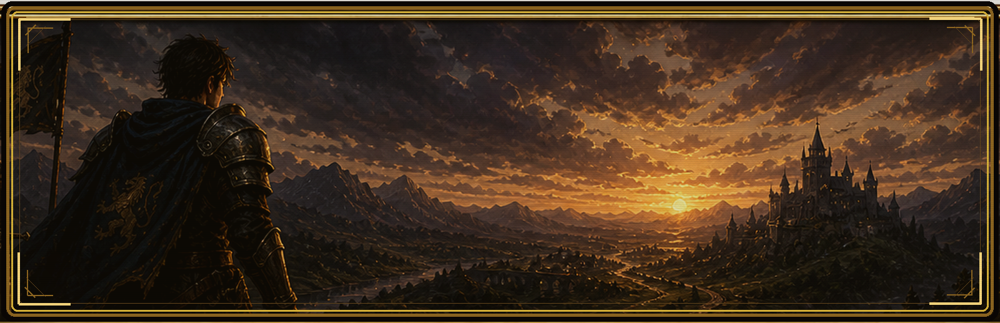
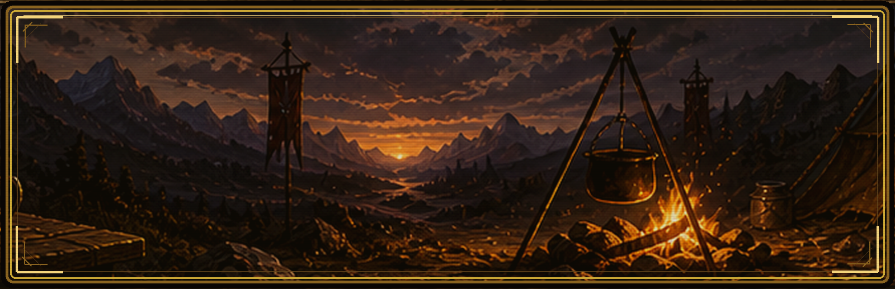
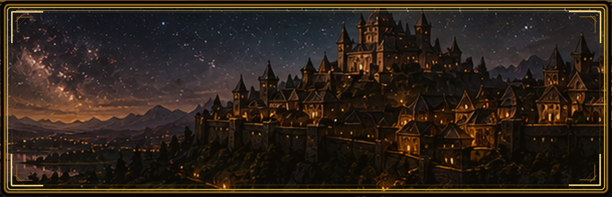
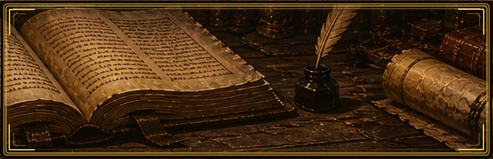
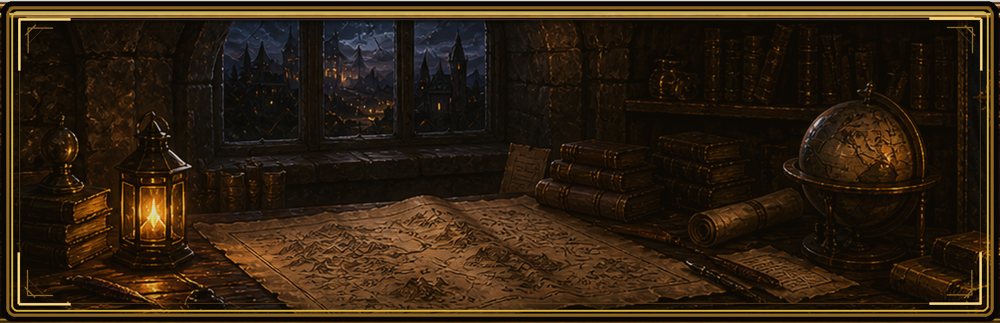

✦ ✦ ✦
The Chronicle
Avenmark, year of recovery — twelve summers since the war.
A chronicle of one Watcher, beginning.
Human · Squire of the Twilight Watch
The prologue is roughly two minutes of reading.
What you choose in it will shape the chronicle.
What you choose in it will shape the chronicle.
1 / 11
A new road unfolds...
Character Sheet
The Watcher
Your class, portrait, stats, boons, and the next trial gate.

Add /images/tabs/hero.png to reveal this tab art.
The Watcher stands between who he was and what he is becoming.
✦
Portrait Unwritten
Add the file to /images/ to reveal it.
Squire of the Twilight Watch
Jerry
Squire
LVL 1
A Rumor
Next Class Trial
Oath Ledger
Quests
The planning layer: daily oaths, weekly oaths, and campaign progress without cluttering the daily check-in.

Add /images/tabs/quests.png to reveal this tab art.
Oaths pinned beneath candlelight; the week waits to be answered.
Daily Oaths
Weekly Oaths
Campaign Hooks
Avenmark
The World
Your habits now upgrade places in the chapterhouse, move NPC relationships, and pressure rival/boss threats.

Add /images/tabs/world.png to reveal this tab art.
Avenmark shifts quietly around the choices you repeat.
Chapterhouse Map
Cast of the Realm
Nemesis Pressure
The Chronicle

Add /images/tabs/book.png to reveal this tab art.
The book remembers what the day tried to forget.
Settings

Add /images/tabs/gear.png to reveal this tab art.
The machinery beneath the myth: quiet, useful, dangerous if mishandled.
Character
—
Of the Realm
Prologue Choices
Boons Earned
No boons yet. Level up to earn one.
Cast
The Chronicler's Ledger
Quests · Class Progress
Backend
Streak & Stats
Backup
Danger Zone
The Chronicle · Phase 2.8.3